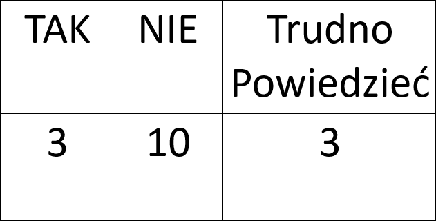
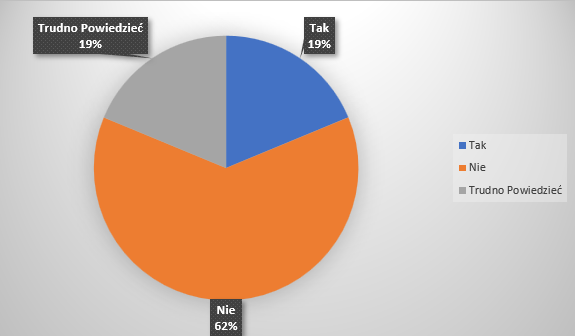
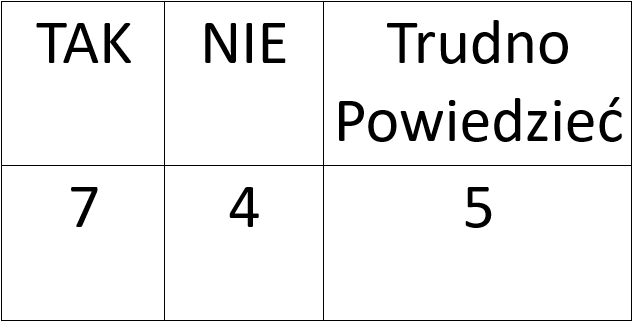
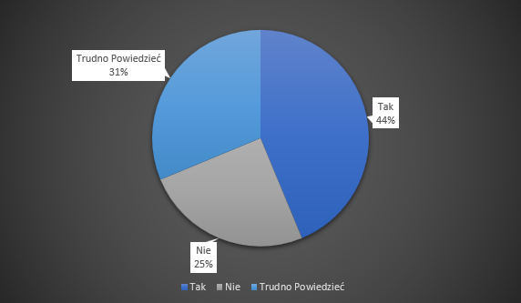
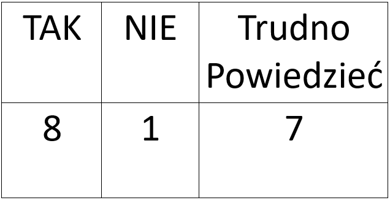
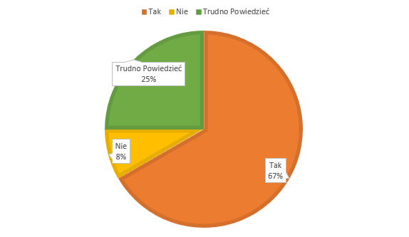
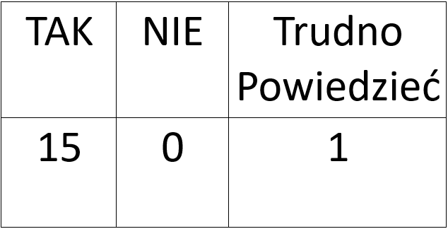
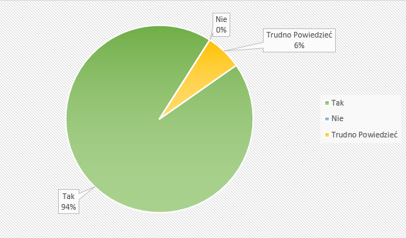
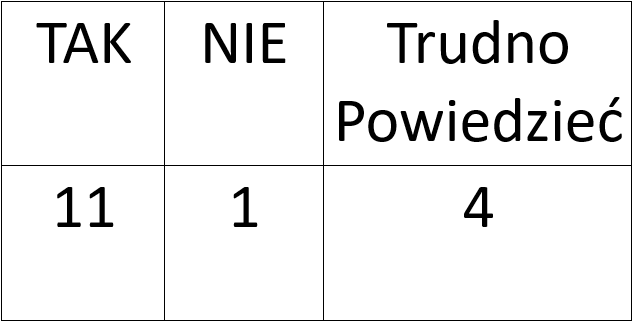
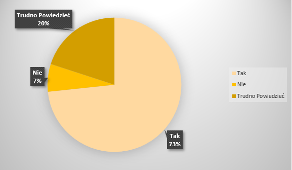

Wykres 1
Pytanie - Czy uważasz, że polskie społeczeństwo zachowuje otwartość i tolerancje wobec imigrantów i uchodźców, którzy osiedlili się w Polsce?
 Wykres 2
Pytanie - Czy, w Twojej opini, polscy obywatele są przychylnie nastawieni do możliwości przyjęcia imigrantów i uchodżców szukających w Polsce bezpieczeństwa lub lepszych warunków do życia?
 Wykres 3
Pytanie - Czy - według Ciebie - mieszkańcy Twojej miejscowości wyraziliby zgodę na osiedlenie się imigrantów lub uchodźców w najbliższej okolicy?
 Wykres 4
Pytanie - Czy uważasz siebie za osobę tolerancyjną i otwartą wobec imigrantów i uchodźców żyjących w Polsce?
 Wykres 5
Pytanie - Czy jesteś za przyjmowaniem imigrantów i uchodźców szukających w Polsce bezpieczeństwa lub lepszych warunków do życia?
 